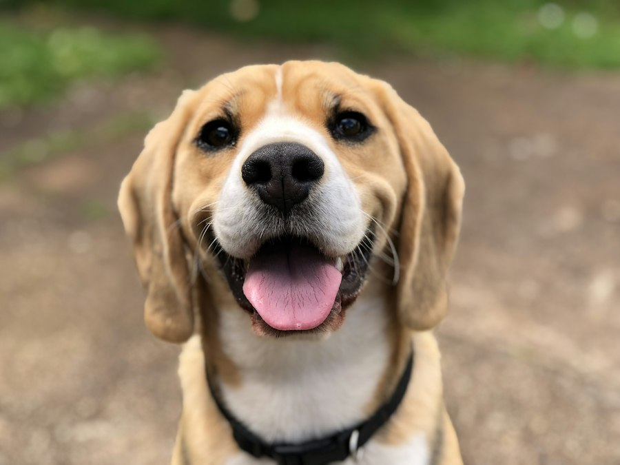
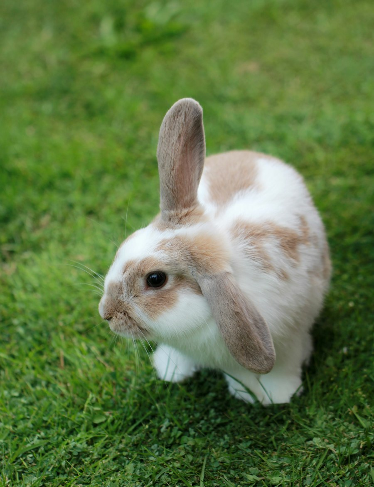
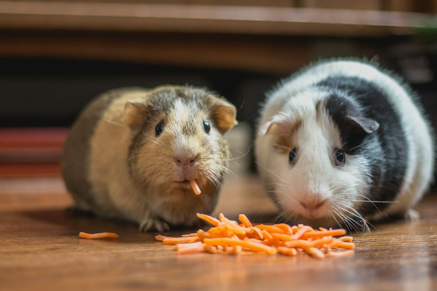
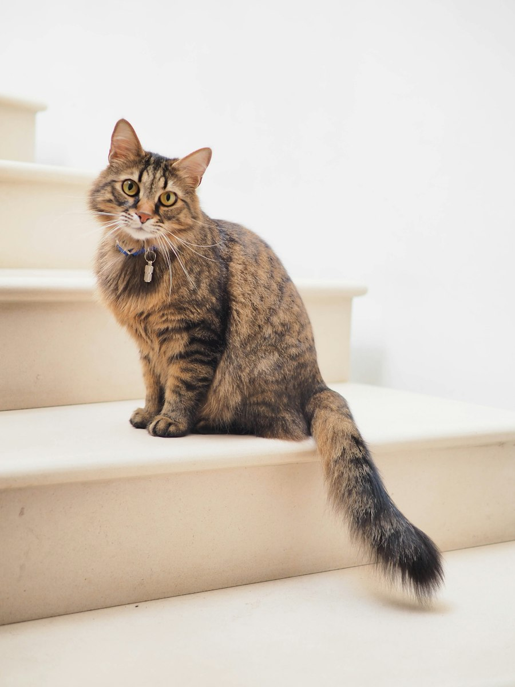
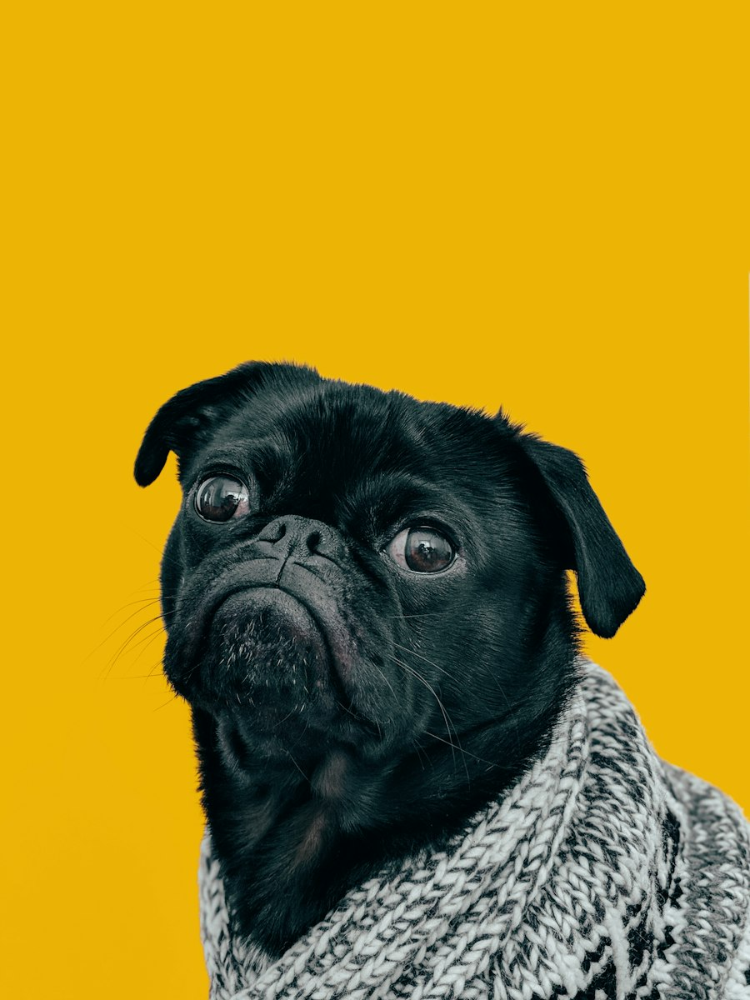
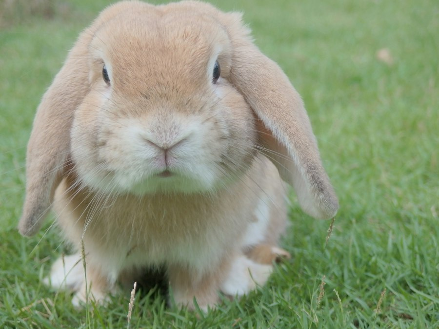
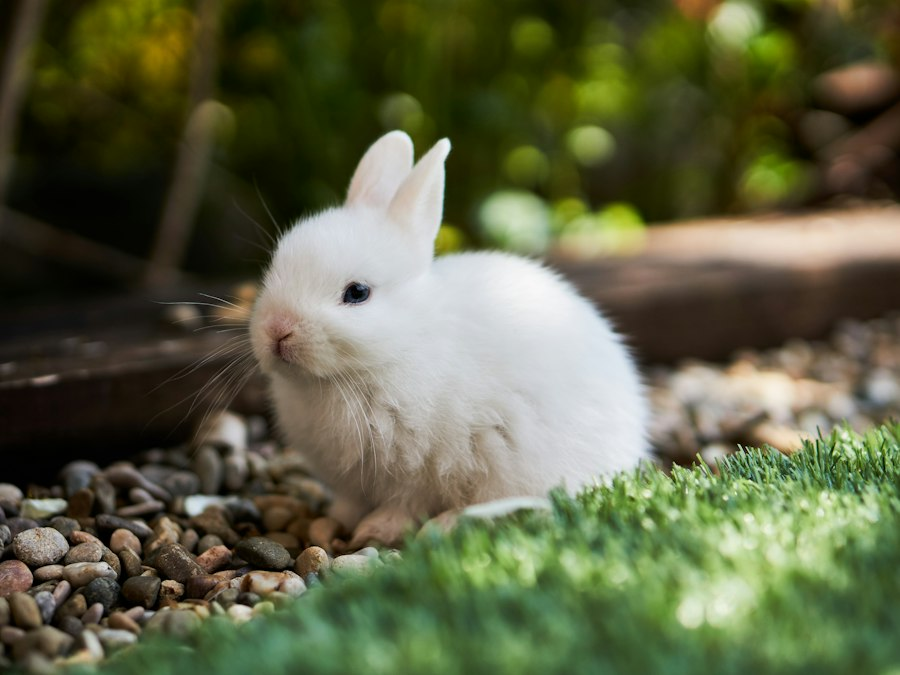

Use window light
Turn off the flash and put your pet beside a window during the day. Soft light keeps fur detail instead of washing the face out.
12 lovely moments









No photos found in this category.
Four habits that make phone photos look like portraits.
Turn off the flash and put your pet beside a window during the day. Soft light keeps fur detail instead of washing the face out.
Kneel or lie so the camera is at their eye level. Photos taken from above make pets look small and flatten the face.
Tap the screen on the eye and let the camera lock focus. Add a little distance so the ears are not cropped out.
Let them be themselves, take a burst, then keep the sharpest frame. A treat held just above the lens lifts the head nicely.
A plain wall, a cushion or a patch of grass beats a busy room. Move the food bowl and cables out of frame first.
Cats use their whiskers to help sense their surroundings.